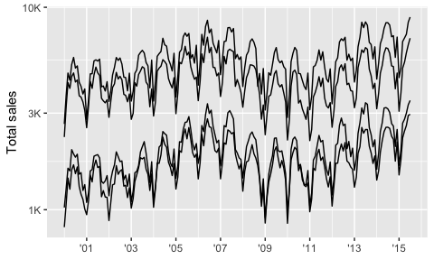
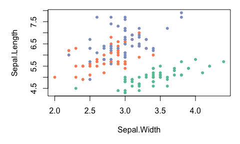

One of the most difficult parts of any graphics package is scaling, converting from data values to perceptual properties. The inverse of scaling, making guides (legends and axes) that can be used to read the graph, is often even harder! The scales packages provides the internal scaling infrastructure used by ggplot2, and gives you tools to override the default breaks, labels, transformations and palettes.
Installation
# Scales is installed when you install ggplot2 or the tidyverse.
# But you can install just scales from CRAN:
install.packages("scales")
# Or the development version from Github:
# install.packages("pak")
pak::pak("r-lib/scales")Usage
Breaks and labels
The most common use of the scales package is to customise to control the appearance of axis and legend labels. Use a break_ function to control how breaks are generated from the limits, and a label_ function to control how breaks are turned in to labels.
library(ggplot2)
library(dplyr, warn.conflicts = FALSE)
library(lubridate, warn.conflicts = FALSE)
txhousing %>%
mutate(date = make_date(year, month, 1)) %>%
group_by(city) %>%
filter(min(sales) > 5e2) %>%
ggplot(aes(date, sales, group = city)) +
geom_line(na.rm = TRUE) +
scale_x_date(
NULL,
breaks = scales::breaks_width("2 years"),
labels = scales::label_date("'%y")
) +
scale_y_log10(
"Total sales",
labels = scales::label_number(scale_cut = scales::cut_short_scale())
)
economics %>%
filter(date < ymd("1970-01-01")) %>%
ggplot(aes(date, pce)) +
geom_line() +
scale_x_date(NULL,
breaks = scales::breaks_width("3 months"),
labels = scales::label_date_short()
) +
scale_y_continuous("Personal consumption expenditures",
breaks = scales::breaks_extended(8),
labels = scales::label_dollar()
)
Generally, I don’t recommend running library(scales) because when you type (e.g.) scales::label_ autocomplete will provide you with a list of labelling functions to job your memory.
Advanced features
Scales colour palettes are used to power the scales in ggplot2, but you can use them in any plotting system. The following example shows how you might apply them to a base plot.
library(scales)
# pull a list of colours from any palette
viridis_pal()(4)
#> [1] "#440154FF" "#31688EFF" "#35B779FF" "#FDE725FF"
# use in combination with baseR `palette()` to set new defaults
palette(brewer_pal(palette = "Set2")(4))
par(mar = c(5, 5, 1, 1))
plot(Sepal.Length ~ Sepal.Width, data = iris, col = Species, pch = 20)
scales also gives users the ability to define and apply their own custom transformation functions for repeated use.
# use trans_new to build a new transformation
logp3_trans <- trans_new(
name = "logp",
transform = function(x) log(x + 3),
inverse = function(x) exp(x) - 3,
breaks = log_breaks()
)
dsamp <- sample_n(diamonds, 100)
ggplot(dsamp, aes(carat, price, colour = color)) +
geom_point() +
scale_y_continuous(trans = logp3_trans)